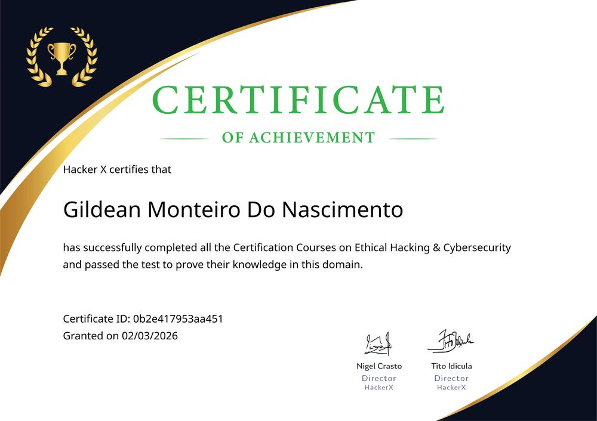
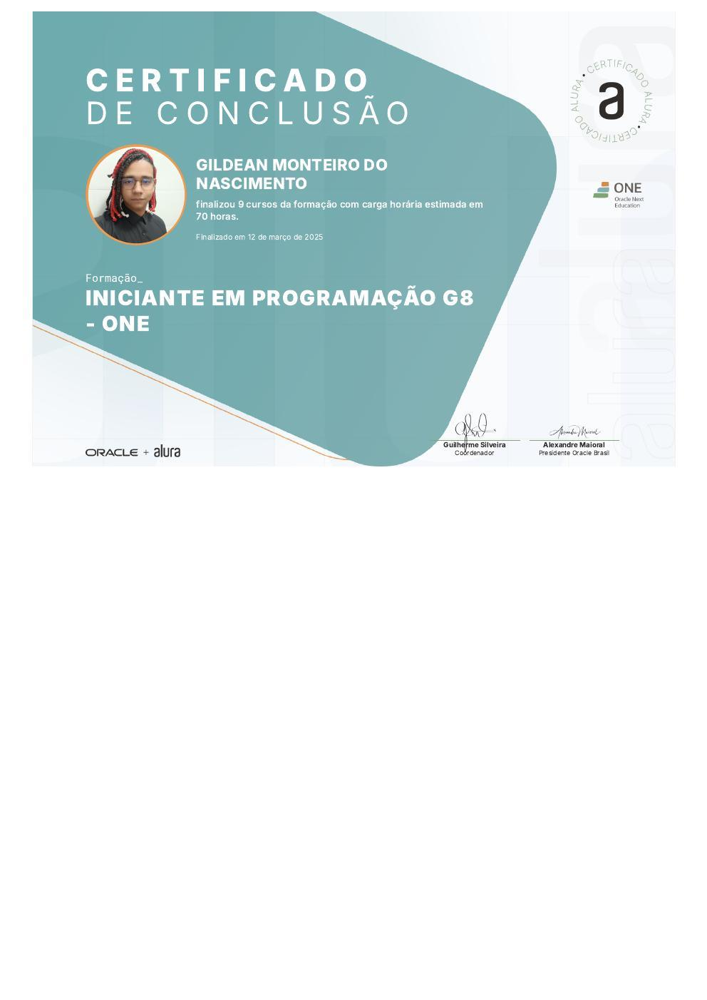
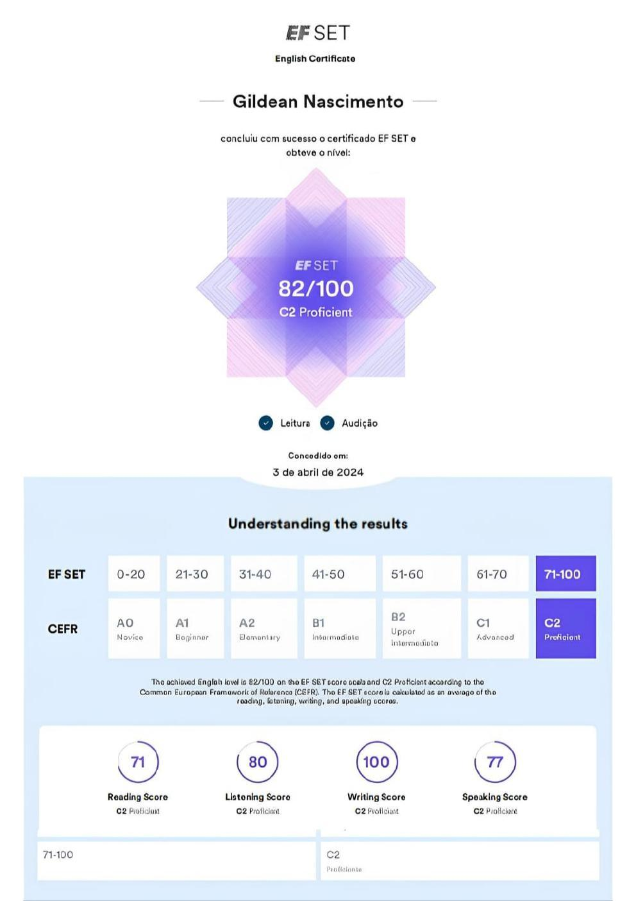

Back-end Java & Spring Boot
APIs REST com Java 21 e Spring Boot 3.5: controllers, serviços, JPA/Hibernate e regras de negócio cobertas por testes.
Estágio · Dev júnior · SegurançaJava · Spring · Cloud
Estudante de TIC na FAETERJ e responsável pelo Hub Atlética Dragões, plataforma em produção com Java 21, Spring Boot, PostgreSQL e 1.275 testes automatizados. Certificado em Ethical Hacking e em formação no Hackers do Bem. Procuro um estágio ou vaga júnior para somar ao time e aprender rápido.
Formação e certificações por
Sou Gildean Monteiro, desenvolvedor full stack em formação que aprende construindo e mantém no ar o que constrói.
Curso Tecnologia da Informação e Comunicação na FAETERJ e sou o responsável pelo Hub Atlética Dragões, a plataforma que os alunos de TIC usam para notas, cronograma, conteúdos de estudo, carteirinha digital, reserva de salas e campeonatos de e-sports. Modelo o banco, escrevo o back-end, monto a interface, configuro o servidor e faço o deploy.
Segurança é meu diferencial: tenho a certificação de Ethical Hacking da HackerX e estou na formação Hackers do Bem (MCTI/RNP) desde abril de 2026. Isso muda como eu escrevo código: rotas protegidas por padrão, dados pessoais tratados conforme a LGPD e varreduras de segurança nos meus próprios sistemas.
Antes da TI, fui subgerente de uma operação com mais de 700 clientes por dia. Trouxe de lá o que nenhum curso ensina: comunicação, responsabilidade e calma sob pressão. Hoje também sou Conselheiro Acadêmico e Presidente da Atlética Dragões.
Não quero só escrever código. Quero entregar coisas que as pessoas usam de verdade.
Antes de me chamar, veja o que eu procuro e o que eu levo. Isso poupa o seu tempo e o meu.
Cada item abaixo já está em uso num sistema em produção. Não é uma lista de tecnologias que eu “sei mexer”.
APIs REST com Java 21 e Spring Boot 3.5: controllers, serviços, JPA/Hibernate e regras de negócio cobertas por testes.
Integração com LLM (Groq), login Google (OAuth2), e-mail SMTP, armazenamento S3 (Cloudflare R2) e notificações Web Push.
Modelagem, índices e constraints, com schema versionado em 46 migrações Flyway, ensaiadas numa cópia do banco antes de ir ao ar.
Interfaces responsivas em HTML, CSS e JavaScript, PWA instalável, React 18 com Vite e cuidado com acessibilidade (teclado e contraste AA).
Docker Compose, Caddy com TLS automático, Linux, Oracle Cloud e AWS; CI/CD com GitHub Actions + GHCR e rollback por versão.
JWT + BCrypt, OAuth2, rotas protegidas por padrão, rate limiting, CSP/HSTS, defesa contra XSS e SQL injection, exportação e exclusão de dados do titular.
1.275 testes automatizados (JUnit 5 e Mockito) e o hábito de provar que a correção funciona antes de fazer o deploy.
Assistente com LLM, FAQ determinístico e cache para reduzir custo, degradação controlada quando a cota acaba e noções de RAG.
Dois anos como subgerente (700+ clientes/dia) e representação estudantil: explicar, negociar prioridades e trabalhar em equipe.
Uma amostra do que eu já construí e coloquei no ar.
Plataforma web dos alunos de TIC da FAETERJ: notas e simulador de aprovação, cronograma, conteúdos, carteirinha com QR verificável, reserva de salas, e-sports e assistente de IA.
Ver ao vivo ↗Plataforma de avaliações de cultura pop (filmes, séries, jogos, livros, álbuns e HQs) com autenticação JWT, migrações Flyway e aceite de termos conforme a LGPD. Publiquei na Oracle Cloud com Docker Compose e Caddy em 2025.
HTML, CSS e JavaScript puros, sem dependências nem build, em português e inglês, com cabeçalhos de segurança (CSP, HSTS, X-Frame-Options) configurados na Vercel.
Ver código ↗Aplicação RAG para perguntar sobre documentos: busca semântica com embeddings e respostas geradas pela API da Anthropic.
Acompanhar no GitHub ↗O clássico recriado em JavaScript puro: canvas, colisões e placar construídos do zero para consolidar lógica e manipulação do DOM.
Ver código ↗Projetos do programa Oracle Next Education com a Alura: Jogo do Número Secreto e Amigo Secreto, com funções, arrays e eventos em JavaScript.
Hub.Projeto próprio · em produção
Java 21 e Spring Boot no back-end, PostgreSQL com 46 migrações Flyway, front-end PWA em JavaScript puro, Docker e Caddy na Oracle Cloud. Migrei a infraestrutura da AWS para a Oracle e o custo mensal caiu de ~R$ 170 para zero, com cerca de 2 minutos de indisponibilidade.
Código privado porque o sistema guarda dados de alunos reais. Mostro a arquitetura e o código numa entrevista técnica.
$ curl -s atleticadragoes.com.br/api/health { "status": "UP", "banco": "UP", "draco": { "estado": "ok" }, "email": { "estado": "ok" } } $ docker compose ps --format "{{.Service}}: {{.Status}}" caddy: Up (healthy) chatbot-api: Up (healthy) postgres: Up (healthy) $ ls api/src/main/resources/db/migration | wc -l 46 $ grep -rE "@Test\b" api/src/test | wc -l 1275 $
Antes de escrever código, entendo o problema e meço o que está acontecendo com dados reais.
Divido o trabalho em entregas pequenas e completas, uma de cada vez.
Código com testes, incluindo o teste que prova que o defeito não volta.
Migração ensaiada numa cópia do banco, deploy pelo CI e conferência no ar.
Acompanho logs e métricas depois do deploy e ajusto pelo uso real.
Tecnologia no estudo e nos projetos; atendimento e liderança no trabalho. As duas coisas aparecem no jeito como eu trabalho.
Sistemas de controle de acesso e monitoramento de fluxo; incidentes resolvidos em tempo real com protocolos de segurança. Trilha de conscientização em cibersegurança da Academia Estapar.
Atendimento presencial, telefônico e virtual; agenda de consultas.
Atendimento a clientes e suporte a rotinas administrativas.
Liderança de uma operação com 700+ clientes por dia: escala e delegação da equipe, recursos e melhoria de processos.
Atendimento ágil e operação de equipamentos com foco em qualidade, até a promoção.
Redes, integração de sistemas, servidores e desenvolvimento. Conselheiro Acadêmico e Presidente da Atlética Dragões desde mai/2024.
Programa nacional de formação em segurança cibernética do Ministério da Ciência, Tecnologia e Inovação, executado pela RNP.
Certificação final e 17 módulos: XSS, SQL injection, varredura de vulnerabilidades, sniffing e MITM, senhas, Wi-Fi e IA aplicada à segurança.
Imersão em Python, IoT, Inteligência Artificial e Cloud, com projetos em equipe.
70 horas de lógica com JavaScript, HTML e CSS responsivo, Git e GitHub.
Quer tudo num documento só? Baixe o currículo em PDF ou a versão em inglês.
Hackers do Bem · MCTI / RNP
desde abr/2026

HackerX · 17 módulos
mar/2026

Oracle Next Education · Alura
mar/2025

EF Standard English Test
abr/2024
Estágio ou vaga júnior em desenvolvimento (back-end Java ou full stack), infraestrutura e cloud, ou segurança da informação. Também estou aberto a outras áreas de TI em que eu possa aprender rápido e contribuir.
Moro em Petrópolis (RJ) e posso atuar de forma presencial, híbrida ou remota. Concilio o trabalho com a graduação na FAETERJ; os horários combinamos na entrevista.
Ainda não com carteira assinada em TI. Minha experiência técnica vem do Hub Atlética Dragões, que construí e mantenho em produção, de projetos pessoais como o OmniRate, da residência no Serratec e das certificações. Profissionalmente, trago mais de 6 anos de atendimento e liderança, incluindo dois anos como subgerente.
O repositório é privado porque o sistema guarda dados de alunos reais. O site está no ar em atleticadragoes.com.br, com modo visitante sem login, e eu apresento a arquitetura, o código e o painel numa conversa ou entrevista técnica. O código deste portfólio é público no GitHub.
Como ferramenta de produtividade, sempre com revisão, testes e validação antes do deploy. Também integro LLMs em produto: o assistente do Hub responde dúvidas dos alunos com custo controlado.
C2 (Proficient) no EF SET, com nota 82/100. Leio documentação técnica, escrevo e converso com fluência.
Vamos conversar
Mande a descrição da vaga ou marque uma conversa. Costumo responder no mesmo dia.